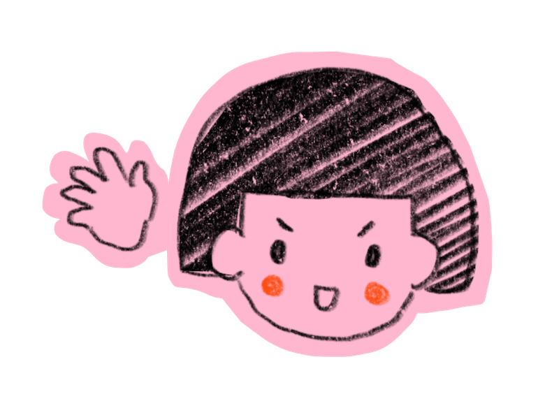
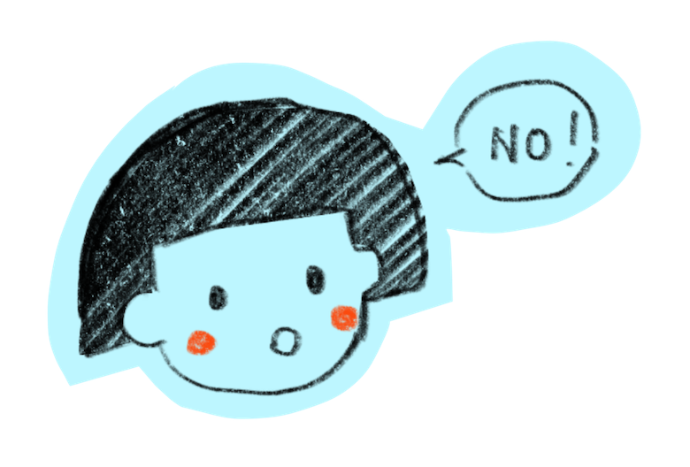

Dedication
This is dedicated to those who have introduced me to the meaning of arguments. I have been very fortunate to have been born into a loving family, I was raised in a traditional Japanese household, and arguments were uncommon at home. Women tend to have a lower position at home and in society. However, when I really learned the art of argument, I was gifted with my son. His presence has taught me the meaning of the constructive side of arguing and unconditional love.
To all those who have previously had constructive and non- constructive verbal arguments with me, some of which unfortunately had turned physical, leading me to break my nail. All of you have helped me grow into a better person. Every argument we had was a learning experience for me.
Argument
Arguments are commonly understood as expressing opposite opinions and is usually associated with heated conflicting words exchanging.
Conflicts are unavoidable in human nature and the society we live in. Sometimes we tend to stay silent to avoid arguments because it is considered impolite and inconvenient, especially in the traditional Japanese culture in which I was brought up. We were taught it is disrespectful to directly show your opposite comments and ideas. We had to agree with each other to show respect. If you disagree with the other person, it is common courtesy to avoid telling the other person how you think. It is considered rude and impolite if you directly tell them they are wrong or disagree with the person. It is common practice to always give compliments and agree with the other person. This is to show respect and to maintain harmony. When we had to offer our opposing opinions, it is expected to agree with the other person and express our opposite opinions indirectly. However, this is uncommon because speaking negative comments is somehow considered disturbing the harmony or hurting the other person’s feelings.
When people directly disagree with the other person, it is deemed to be rude and ill-mannered. My parents were traditional Japanese. I was brought up to understand the beauty of Japanese communication culture, avoid conflicts, and stay silent to maintain a harmonious environment. But attending school in Macau and frequently visiting the U.S. for I have family and friends living in the U.S. I was deeply influenced by the Macau culture and American culture. It has been confusing while getting to understand myself and other people who were raised in other cultures. Handling conflicts and arguments were something that was confusing yet helped me grow and have a better understanding of myself.
Growing up
Growing up, I was taught to be obedient and be respectful to others. Talking back or expressing your opinions is considered to be rude and ill-mannered. I remember learning to avoid conflicts at a very young age. Controlling our thoughts, emotions, and temper was supposed to be well- educated and classy.
As I started developing my own thoughts and having friends from different cultures. I began to feel confused as my friends spoke very differently and straight forward. They would directly say “no” and openly express their opposing ideas, which would be defined as rude and blunt in the Japanese culture. Expressing your feelings was being celebrated in western culture, and in modern society, it was interpreted as being confident and self-love. This was especially interesting to me because I have always had different ideas and have strong opinions. Suppressing my own thoughts and behaviour has been uneasy. It has lead to self-doubt and other issues.
Avoiding arguments completely to maintain a peaceful environment can result in misunderstandings and may have disastrous consequences. For a healthy relationship, expressing your own views and thoughts are vital. However, it often leads to conflicts when mishandled. Learning to handle conflict and arguments is an art in human relationships.
Early Arguments begin
During my teenage years, I started to believe that it is necessary to stand up for ourselves in certain situations. And very often, I would bluntly express my opinions and result in significant conflicts. Teachers at school would find me troubling because I would share my thoughts when it was unnecessary, expressing opposing ideas and pointing out when the teacher had made mistakes. Most of the times, the teacher will get defensive, resulting in heated arguments. I had no problem standing up for myself and my believes. Sometimes I would provide supportive scientific evidence to support my statements. Unfortunately, teachers never admit their mistakes and are upset that they are misbehaving by not staying quiet. Arguments happened very often between teachers and me, I was labelled rebellious, but I was only trying to prove a point. Interestingly, frequently classmates would come to thank me for voicing out, for they did not dare to.
Arguments between peers and me
In contrast, It was uncommon for me to have massive conflicts with my friends. My best friend, who has a similar personality, has extreme views and visions. We often have healthy arguments, exchanging different ideas and sharing opinions. We analyse different perspective on a matter. This does not necessarily result in both of us agreeing on the same idea. Most of the times, agree to disagree. From a very early time, we developed having healthy arguments, got to know each other better and gained a broader vision.
Arguments between my partners and me
Conflicts were common between one previous partner with whom I had a romantic relationship. Coming from a culture where compliments are politeness and maintaining harmonious communication is necessary, it was very contradictory for me to balance the culture I was brought up in and the new culture I was exposed to the modern western culture. Modern society encourages female to stand on their ground and express their own opinions, which is the exact opposite of the culture I was raised in. Arguments happened between him and me, conversations will sometimes get heated, and things were thrown and broken. There were physical contacts in a few heated arguments, and on one occasion, one of my pretty well-manicured nails was broken. Hurtful words were used by both parties, and it was chaotic. It was hard adapting to accepting and giving blunt and straightforward conversations.
Arguments between my son and me
I was gifted with a son at the age of 25. As he started developing his verbal skills, we started having arguments. I find it amazing because he was able to defend himself yet being respectful to his mother from a very young age. I am glad that he is an obedient child, and at the same time, he tries to stand on his ground and tell me what he thinks. We would have arguments over tiny things, such as the time for showering, whether he can have ice cream for dinner, watch television programmes instead of doing homework, or if the 96 music volume is too loud. There were times when we both got emotional, and voices were raised. But no matter how heated our conversation got, we would both express our thoughts without saying hurtful things to each other. All our arguments ended with both of us apologising, a kiss and “I love you”. We always managed to make peace right after our arguments. Every night we go to bed knowing we love each other doubtlessly.
Our bond grows more potent after each argument. We learn more about each other. Sometimes we sit down and analyse our previous conversations, and we come up with better solutions. Interestingly, we have come up with fun facts about why sometimes we end up in huge arguments: we were usually hungry or sleepy.
We have compromised and agreed on specific rules in our mother and son relationship. One of which is when it is early in the morning, we will not have long conversations before we both have eaten our breakfast. Another rule is when we sense that one of us is starting to get emotional and starts raising our voice, we would verbally say we need to pause and not say a word. Because we will only get more upset if we continue, and it is not helpful to the stressful situation we are already in.
We have developed a strong bond with respect and understanding because we trust and love each other unconditionally. We try our best to compromise and learn to improve our communication because we do not want repeated stressful arguments.
Growing from Arguments
Motherhood has helped me understand that arguments do not necessarily have to be heated or completely avoided to maintain peace and harmony. Arguments can help improve a relationship, a situation or a project. It can help us better understand other people’s perspectives, and there is no absolute right or wrong in opinions.
Arguments mainly occur because “we care” about something. It could be the other person, a situation or a project. But sometimes, it is because we feel that we are being maltreated and that there is a need to express ourselves. But no matter the reason behind the arguments, we can always choose to control our emotions and have construction arguments.
I do not regret having arguments with my teacher in middle school. I have gained insight and learnt how not to approach a conversation. I have learned the consequences of standing up for yourself in different environments, the result worth it, and how petty sometimes adults can get. I now understand that not everyone is open-minded and welcomes other ideas or is pointed out for making mistakes. We can continually evaluate a situation and decide to stay quiet or let our voices be heard. It is a choice or our own.
Having been involved in a fiery past relationship, it is amazing how my communication skills with the opposite sex have matured. Both of us did exactly what not to do in a relationship. I have realised that the key was to avoid repeating any of the things that we have said or did.
Having had all the previous arguing experiences made me realise every argument counts. There is always something I can learn from how to avoid repeating the same situation and improve and maintain a solid and healthy relationship with other people. Learning to balance my deeply rooted Japanese cultural background and the right to express myself in modern society.
The society we live in today is flooded with different voices and opinions. Arguments happen all the time, especially in this new era with social media spreading different voices. We can all learn to respect each other’s views and better understand different people from different backgrounds.